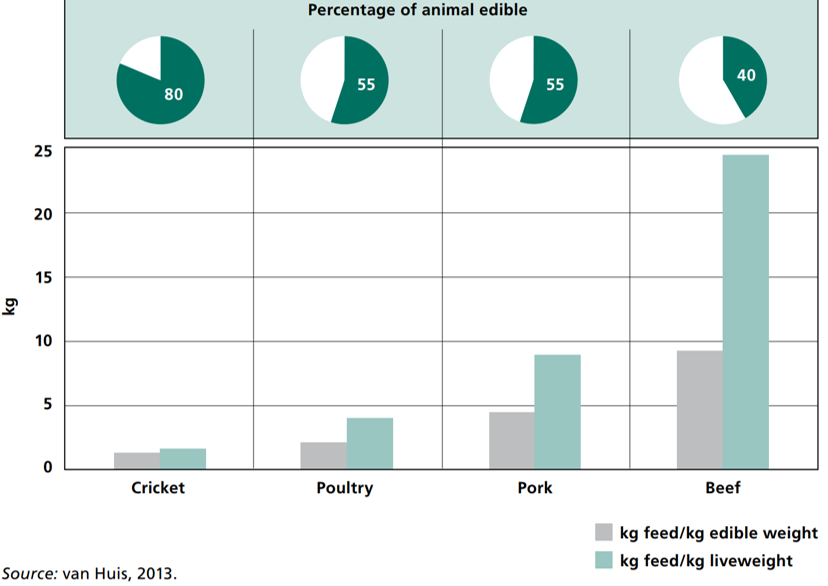
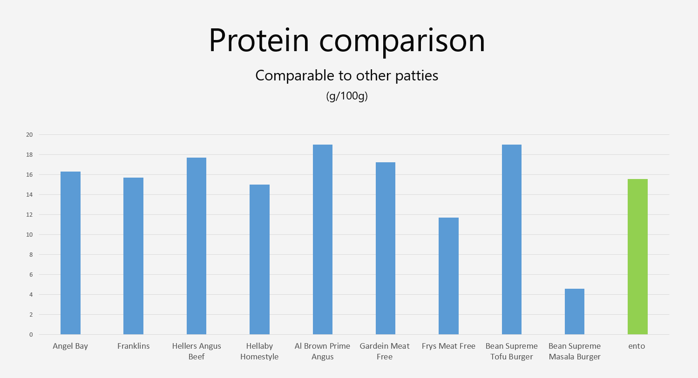
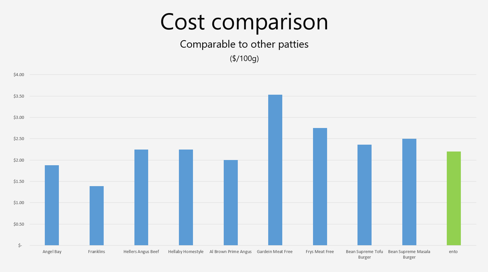

It all comes down to the amount resources it takes
to farm our food and how much waste
is being produced to do so.
Crickets completely outmatch the competition when it comes
to farming efficiency.
Crickets have one the highest eatability percentages you'll find in the animal kingdom. This means more nutrition, for less waste.
Turning Crickets into something appetising was an important step for us. These graphs show how our patties compete with others on the market.
 